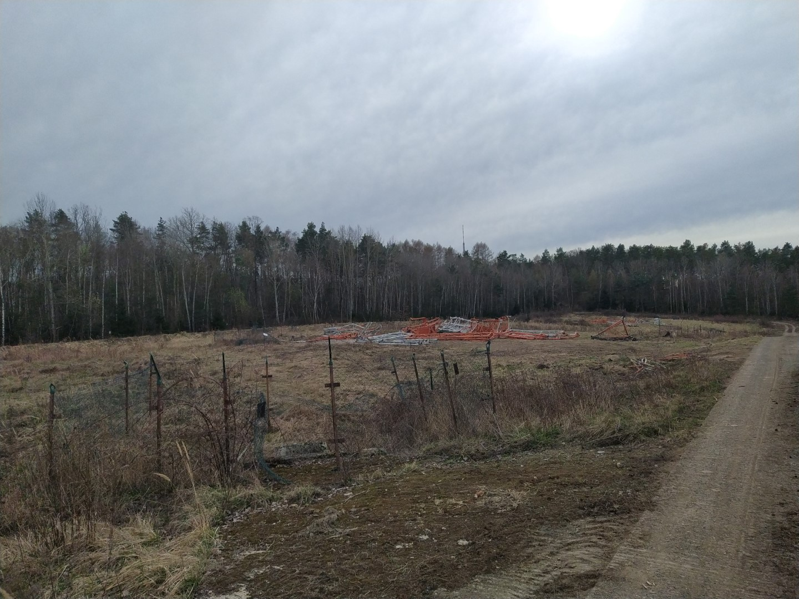
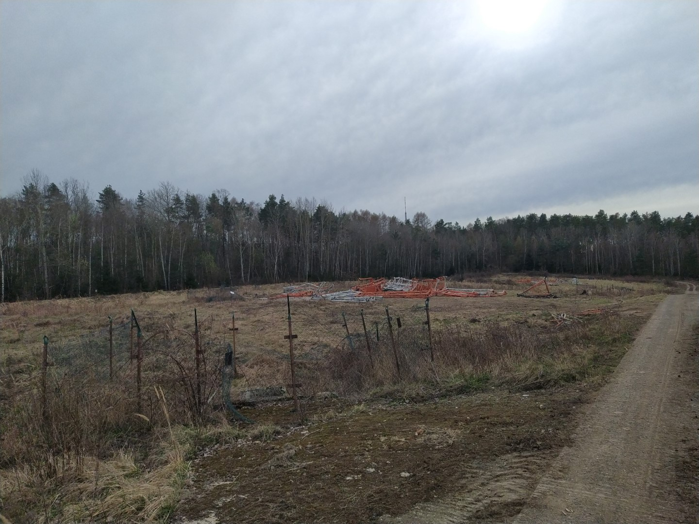
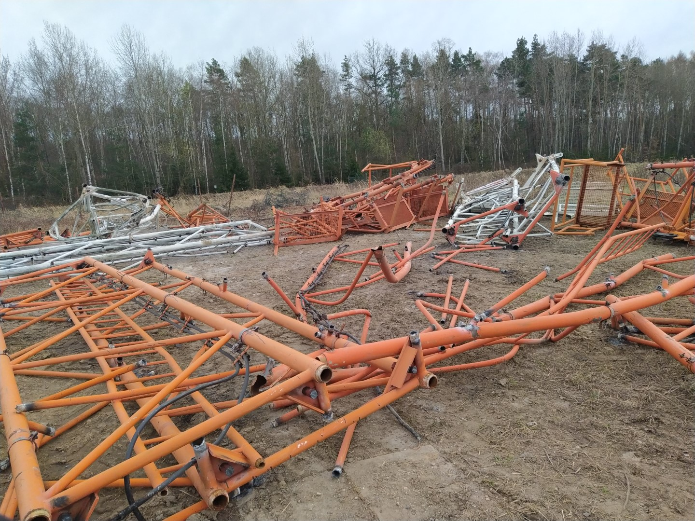
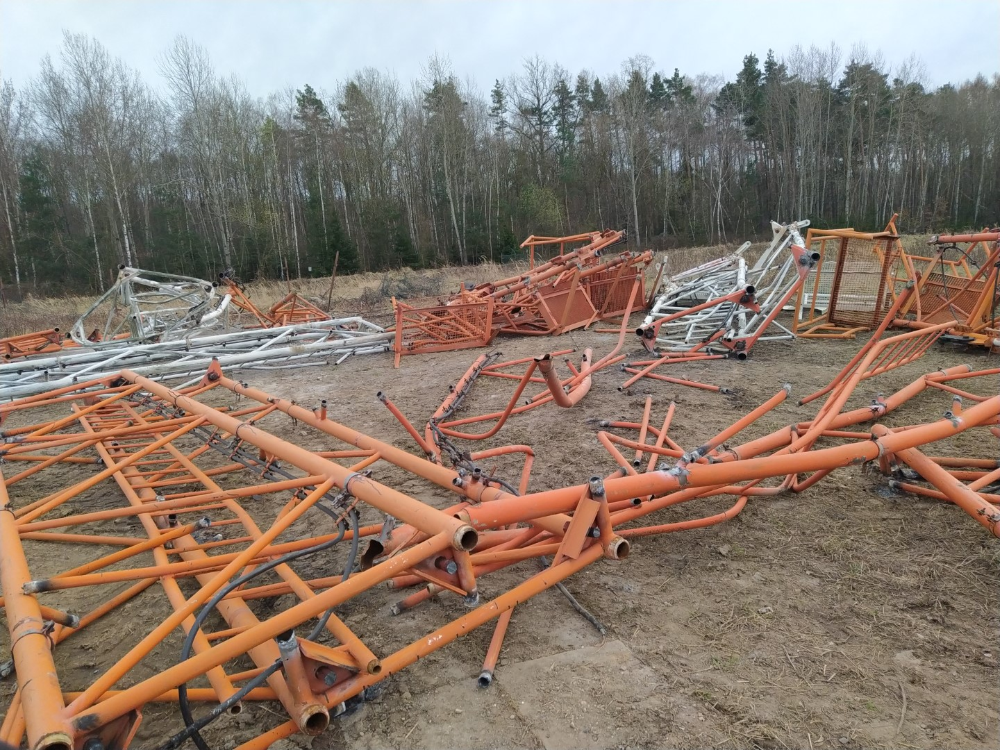
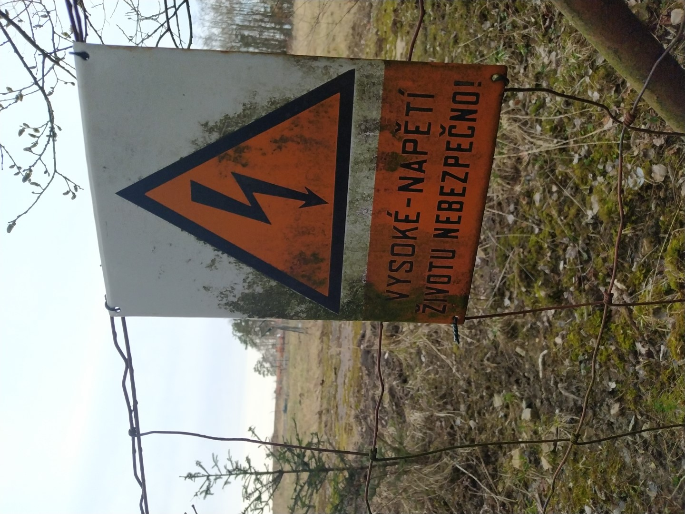

RKS Praha-Zbraslav
Jak to bylo døív...
Radiokomunikaèní stanice Praha-Zbraslav byla, a� u� pøi jízdì po Strakonické, èi napøíklad pøi pohledu z hradeb Vyšehradu, nepøehlédnutelnım objektem vedle televizního vysílaèe Cukrák. Vysílaè byl vıjimeènı tím, �e se skládal ze tøí vertikálních sto�árù typu UNIPOL. Ka�dı sto�ár mìl pøi své patì malou betonovou boudièku, ve které se pravdìpodobnì nacházelo vıkonové vysílací zaøízení. V poslední dobì vysílaè vyu�ívalo Country rádio, kde byl rozhlas vysílán na frekvenci 1062 kHz (vlnová délka pøibli�nì 282 m) s vıkonem 10 kW. Pøíjem byl v okolí Prahy velmi èistı, a i pøes to, �e byl lehce „zneèištìn“ jakımsi nízkofrekvenèním bzuèením, co� mimochodem na SV AM vysílání není tolik vıjimkou, zvuk byl díky dobrému modulátoru velmi kvalitní. Tento modulátor byl mimochodem po ukonèení vysílání ze Zbraslavi pøevezen a namontován do Liblic, kde nahradil pùvodní, èím� byl denní pøíjem z tohoto vysílaèe znaènì zlepšen.


Vypnutí vysílaèe
K ukonèení vysílání došlo 31.10. v 10 hodin. Poslední vysílaná písnièka byla Prodavaè od Michala Tuèného. �ádné slavnostní ukonèení, jako napøíklad pøi odstavení Liblic (2021) se nekonalo a po skonèení písnièky byl vysílaè vypnut. Bohu�el ukonèení vysílání nebylo dopøedu oznámeno. V pásmu, na kterém vysílal se od té doby dá naladit, aè slabì a v noci (prostorová vlna šíøená odrazem od atmosféry) zahranièní (pravdìpodobnì Tureckı?) rozhlas.
Definitivní konec
Po ukonèení vysílání ještì dlouho trvalo, ne� se zaèalo nìco dít. Èekali jsme demolici nejdéle v následujícím mìsíci, ale nakonec se to protáhlo na dlouhé 4 mìsíce a 6.3. 2024 byl teprve str�en. První vì� šla k zemi v 9 hodin dopoledne, druhá v poledne a tøetí v 15 hodin. Odstøel pomocí trhavin nebyl uskuteènìn, tudí� vysílaè byl jen „polo�en“ pomocí pøerušení nosnıch lan. Pád byl øízenı jako pøi demolici vìtšiny vysílaèù. To znamená, �e bylo zaøízeno, aby se pøibli�nì v polovinì zlomil a oba segmenty spadly rovnobì�nì do areálu RKS. Takhle se postupovalo u všech tøí vì�í.
Stav po demolici
 

 

